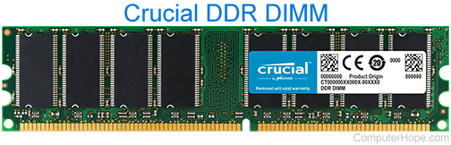

Alternatively referred to as main memory, primary memory, or system memory, RAM (random-access memory) is a hardware device that allows information to be stored and retrieved on a computer. RAM is usually associated with DRAM, which is a type of memory module. Because data is accessed randomly instead of sequentially like it is on a CD or hard drive, access times are much faster. However, unlike ROM, RAM is a volatile memory and requires power to keep the data accessible. If the computer is turned off, all data contained in RAM is lost.
The layout of different standards of RAM does vary, so, you can’t install DDR3 memory into a DDR4 slot.
There are a few factors you should consider before settling on what RAM to buy, most importantly – capacity, memory clock, and CAS Latency.
Currently, there’s no better value than a 16GB (2×8 GB) DDR4 3200 MHz CL16 Memory kit. You can find options from Corsair, Crucial, G.Skill, and a few others at attractive prices.
If you’re curious about how memory works and what factors you should consider before deciding on one, take a look at our RAM buying guide!

Additional RAM information
As the computer boots, parts of the operating system and drivers are loaded into memory, which allows the CPU to process instructions faster and speed up the boot process. After the operating system is loaded, programs you open like the browser you're using to view this page are also loaded into memory. If too many programs are open, the computer swaps the data in the memory between the RAM and the hard disk drive.A computer's performance is largely attributed to the amount of memory contained within it. If a computer does not have the recommended memory to run the operating system and its programs, it results in slower performance. The more memory a computer has, the more information and software it can load and process quickly.
What's the largest stick of RAM?
Currently, the largest single stick of RAM is 128 GB.
History of RAM
The first form of RAM came about in 1947 with the use of the Williams tube. It utilized a CRT (cathode ray tube); the data was stored on the face as electrically charged spots.The second widely used form of RAM was magnetic-core memory, invented in 1947. Frederick Viehe is credited with much of the work, having filed for several patents relating to the design. Magnetic-core memory works through the use of tiny metal rings and wires connecting to each ring. One bit of data could be stored per ring and accessed at any time.However, RAM, as we know it today, as solid-state memory, was first invented in 1968 by Robert Dennard. Known specifically as dynamic random-access memory, or DRAM, transistors were used to store bits of data.